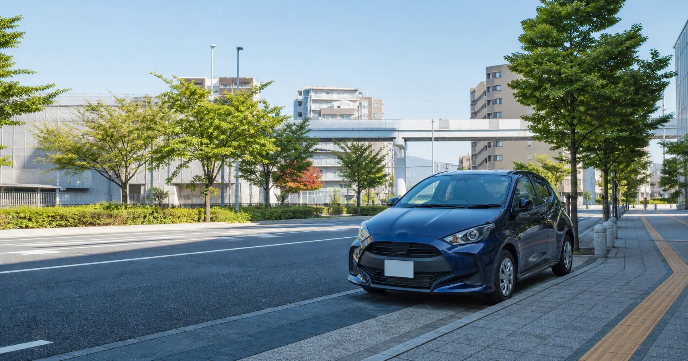
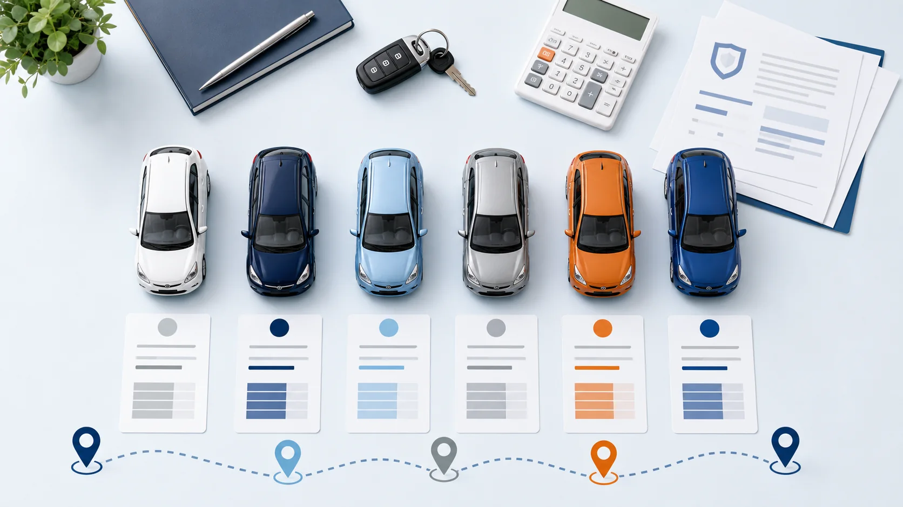

立川のマンスリーレンタカー比較｜1ヶ月24,000円〜の料金・補償・サポート

立川で1ヶ月以上借りる方へ
立川で1ヶ月のレンタカーを探すとき、広告に表示された最低料金だけでは、使いたい車両に合うか判断できません。たとえばガッツレンタカー通常サービスの「1ヶ月24,800円〜」は、原則としてA-1クラスの2ドア軽自動車です。4ドア、車内の広さ、荷物の量までそろえて比較すると、月額料金の見え方が変わります。
マンスリーレンタカーは、1ヶ月以上の利用に特化し、軽自動車から軽ワゴン、広めの軽、軽バン・軽トラックまで月額料金を設定しています。さらに、車両補償、トラブル時の手配、代替車、配車・引取り、立川店への直接相談まで含めて選べることが特徴です。
マンスリーレンタカーを選ぶ主な理由
- 軽自動車は1ヶ月24,000円から利用できます。
- 軽ワゴンは1ヶ月27,000円から。4ドアの近いカテゴリーで比較しやすい料金です。
- 広めの軽は1ヶ月36,000円から。車内空間を重視する場合の候補になります。
- 軽バン・軽トラックは1ヶ月36,000円から。荷物運搬や業務利用にも対応します。
- バッテリー上がりを含む車両トラブル時も、店舗へ連絡して指定ロードサービスの手配を相談できます。
- 事故・故障時の代替車手配に対応しています。
- 条件付きで配車・引取りを相談できます。
- 立川店へ直接相談でき、個人・法人、修理中、納車待ち、社用車用途に対応します。
立川で1ヶ月借りるなら、最低料金だけで決めない
同じ「軽自動車」でも、2ドアか4ドアか、車内の広さ、荷室、受け渡し方法、車両補償、トラブル時の手配条件が異なります。1ヶ月利用では、毎日使う場面を想定して近い用途・カテゴリーを比べることが大切です。
Aクラス・軽自動車。さらにB〜Dクラスまで長期利用向け月額を設定。
A-1クラス・原則2ドア軽自動車。4ドアはA-2クラスで料金が異なります。
比較するときの基準
最安表示だけでなく、必要なドア数・車内空間・荷室を先に決めると、実際に選ぶ車両同士の月額差を確認できます。以下はすべて税別同士で比較します。
立川のマンスリーレンタカー月額料金を比較
マンスリーレンタカーのA〜Dクラスは、個人の通勤や送迎、修理中・納車待ちの代車、法人の社用車、荷物運搬など、1ヶ月以上の用途に合わせて選べます。
表は左右にスクロールできます
| クラス | 車両カテゴリー | 車両例 | 1ヶ月・税別 | 主な用途 |
|---|---|---|---|---|
| Aクラス | 軽自動車 | アルト・ミラ等 | 24,000円 | 通勤、送迎、日常利用 |
| Bクラス | 軽ワゴン | ワゴンR・ムーヴ等 | 27,000円 | 4ドア、荷物を載せる日常利用 |
| Cクラス | 広めの軽 | タント・パレット等 | 36,000円 | 車内空間を重視する利用 |
| Dクラス | 軽バン・軽トラック | エブリィ・軽トラ等 | 36,000円 | 荷物運搬、現場、業務利用 |
※ 表示は1ヶ月の税別基本料金です。空車、車両、CDW、オプション、ハイシーズン、配車・引取りなどの条件は見積もり時にご確認ください。
ガッツレンタカーの月額24,800円はどの車両クラス？
ガッツレンタカー通常サービスの1ヶ月24,800円税別は、A-1クラスの原則2ドア軽自動車です。4ドア軽自動車を希望する場合はA-2クラスとなり、1ヶ月34,400円税別です。乗り降りの回数、後席利用、荷物量まで含めて選びましょう。
通常サービスとレンタシェアは別サービス
- ガッツレンタカー通常サービス
- 有人店舗を利用する通常のレンタカー。本記事では、このサービスの公式料金表・利用規約を比較に使用しています。
- ガッツレンタカー レンタシェア
- 専用アプリで予約・解錠・施錠・決済を行う、24時間無人・非対面の別サービスです。本記事の立川比較には料金・条件を使用していません。
ガッツレンタカーの通常サービスは、A-1が2ドア、A-2とA-2プレミアムが4ドア、Bが軽バン・軽トラックとして案内されています。次の比較では、単純な最低料金ではなく、近い用途のカテゴリーを並べます。
軽ワゴン・広めの軽・軽バンでは月額料金に差がある

表は左右にスクロールできます
| 近い用途・カテゴリー | マンスリーレンタカー | ガッツ通常サービス | 月額差 |
|---|---|---|---|
| 軽ワゴンに近いカテゴリー | Bクラス 27,000円 |
A-2・4ドア 34,400円 |
月7,400円安い |
| 広めの軽に近いカテゴリー | Cクラス 36,000円 |
A-2プレミアム・4ドア 43,200円 |
月7,200円安い |
| 軽バン・軽トラック | Dクラス 36,000円 |
Bクラス 48,000円 |
月12,000円安い |
※ すべて1ヶ月・税別同士の比較です。完全に同一の車種、年式、装備ではないため、近い用途・カテゴリーでの比較です。料金・取扱車両・空車は契約前に各サービスの最新情報をご確認ください。
軽ワゴン相当月7,400円差
広めの軽相当月7,200円差
軽バン・軽トラック月12,000円差
長期利用では車両補償とトラブル対応も確認
1ヶ月以上の利用では、月額料金だけでなく、毎日使う車にトラブルが起きた場合の連絡先、ロードサービスの手配、代替車、店舗へ直接相談できるかまで確認しておくと安心です。
長期利用向けの月額料金と、1ヶ月単位の延長に対応。
車種、受け渡し、トラブル時の対応を店舗へ確認できます。
通勤、代車、納車待ち、社用車、複数台などを相談可能。
指定ロードサービスと代替車の手配について相談できます。
車両補償の有無を比較
マンスリーレンタカーの基本料金には、対人・対物・人身傷害に加え、車両時価額までの車両補償が含まれます。事故時の免責額を補償するCDWも任意で用意しています。
表は左右にスクロールできます
| 補償項目 | マンスリーレンタカー | ガッツ通常サービス |
|---|---|---|
| 対人賠償 | 無制限 | 無制限 |
| 対物賠償 | 無制限 | 無制限 |
| 人身傷害 | 1名3,000万円 | 1名3,000万円 |
| 車両補償 | あり・車両時価額まで | 自動車保険上は「加入なし」。車両損害には別途、利用者負担額の上限制度あり |
| CDW | 任意加入制度あり | 任意加入制度あり |
※ 車両補償の有無だけで事故時の支払総額が決まるものではありません。免責、CDWの適用条件、補償対象外事項は契約前に各サービスの規約で確認してください。
比較のポイント
ガッツ通常サービスには車両損害時の利用者負担額に上限を設ける制度があります。本記事ではその制度を否定せず、マンスリーレンタカーは車両時価額までの車両補償を基本料金に含むという違いを中心に整理しています。
バッテリー上がりなどの車両トラブル時も店舗へ相談可能
マンスリーレンタカー立川店では、バッテリー上がりを含む車両トラブル時に、利用者だけで手配を進めず、まず店舗へ連絡できます。店舗が状況を確認し、指定ロードサービスの手配について案内します。
マンスリーレンタカーの対応
- バッテリー上がりを含む車両トラブル時も指定ロードサービスを手配
- CDW加入者向けのロードサービス制度を用意
- トラブル発生時は立川店へ連絡して相談可能
- 事故・故障時の代替車手配にも対応
※ 適用条件、費用負担、受付時間は契約内容や状況により異なるため、貸出前に立川店へご確認ください。
1ヶ月利用では、故障時のサポート条件も確認が必要
月額料金が安くても、バッテリー上がり、パンク、脱輪などのロードサービス費用が利用者負担となるサービスがあります。マンスリーレンタカーでは、車両トラブル時に店舗へ連絡し、指定ロードサービスや代替車の手配について相談できます。
ガッツレンタカー通常サービスの公式利用条件では、ジャンピング、バッテリー交換、タイヤ交換、パンク修理、ガス欠、脱輪、その他の応急対応は利用者負担とされています。また、契約店舗から直線距離50km以上離れた場所での事故・故障は、原則として代替車の届けや車両入替の対象外です。
事故・故障時は代替車の手配に対応
マンスリーレンタカーは、公式サイトで事故・故障時の代替車手配を案内しています。長期利用中に車が使えない期間をできるだけ短くするため、まず立川店へ状況を連絡し、代替車の在庫と受け渡し方法を確認します。
代替車について確認すること
- 代替車の在庫と手配可能な日時
- 同じクラス・用途の車両を用意できるか
- 受け渡し場所と配車条件
- 事故・故障の状況による費用負担
代替車は在庫や場所により条件が変わります。必ず同じクラスを即時・無料で提供するという意味ではないため、契約前に立川店へ確認してください。
立川市内への配車・引取りにも対応
マンスリーレンタカー立川店は、店舗受取に加え、立川駅周辺や指定場所での受け渡しを相談できます。公式サイトでは無料での車両お届け・引取りを案内していますが、別途利用条件があり、住所・日時・空車状況によって対応可否と料金が異なります。
マンスリーレンタカー立川店の特徴
立川駅から徒歩6分の実店舗があり、料金、車種、空車、受け渡し場所、長期利用中のトラブルについて直接相談できます。店舗受取と配車・引取りの両方を検討できるため、利用場所に合わせて選べます。
- 住所
- 東京都立川市曙町2-22-20 立川センタービル
- 最寄駅
- 立川駅 徒歩6分
- 営業時間
- 10:00〜19:00
- 定休日
- 無休
- 利用期間
- 1ヶ月以上の長期利用に対応
- 利用者
- 個人・法人のどちらも相談可能
修理中・納車待ち・法人の社用車にも利用可能
必要な期間が決まっている場合も、修理完了日や納車日がまだ確定していない場合も相談できます。個人利用に加えて、法人の一時的な増車や複数台利用にも対応します。
数週間から数ヶ月、日常の移動手段が必要な場合に。
購入車が届くまで、必要な期間だけ車を確保。
営業、現場巡回、期間限定プロジェクトの増車に。
増員や拠点開設など、複数台が必要な場合も相談。
立川市内や周辺市へ定期的に移動する個人利用に。
軽バン・軽トラックで工具、商品、荷物を運ぶ用途に。
利用開始までの流れ
開始日、予定期間、用途、希望クラス、受け渡し場所をまとめて伝えると、空車と見積もりの確認がスムーズです。
問い合わせ
利用開始日、予定期間、用途、希望クラス、受け渡し希望場所を伝えます。
空車・総額確認
基本料金、CDW、配車・引取り、オプションなどを含む見積もりを確認します。
予約
必要書類、支払方法、運転者、延長条件、トラブル時の連絡先を確認します。
貸し出し
店舗または指定場所で、車両状態、装備、返却方法を確認して利用を開始します。
返却または延長
契約日時までに返却します。延長の可能性がある場合は早めに立川店へ相談します。
立川のマンスリーレンタカーに関するよくある質問
立川でマンスリーレンタカーを1ヶ月だけ借りられますか？
はい。マンスリーレンタカー立川店は1ヶ月から利用できます。Aクラスの軽自動車は1ヶ月24,000円税別からです。開始日、返却予定日、希望車種、受け渡し場所を伝えて空車と総額を確認してください。
立川で1ヶ月借りる料金はいくらですか？
マンスリーレンタカーは、Aクラスの軽自動車が24,000円、Bクラスの軽ワゴンが27,000円、Cクラスの広めの軽自動車が36,000円、Dクラスの軽バン・軽トラックが36,000円です。すべて1ヶ月・税別の基本料金です。
ガッツレンタカーの月額24,800円はどの車両ですか？
ガッツレンタカー通常サービスの月額24,800円税別は、原則としてA-1クラスの2ドア軽自動車です。4ドア軽自動車のA-2クラスは月額34,400円税別のため、ドア数や用途をそろえて比較することが大切です。
バッテリー上がりなどの車両トラブル時は相談できますか？
マンスリーレンタカー立川店では、バッテリー上がりを含む車両トラブル時に店舗へ連絡し、指定ロードサービスの手配について相談できます。CDW加入者向けの制度で、適用条件と費用負担は契約前に確認が必要です。
基本料金に車両補償は含まれますか？
はい。マンスリーレンタカーの基本料金には、対人賠償無制限、対物賠償無制限、人身傷害1名3,000万円、車両時価額までの車両補償が含まれます。免責を補償するCDWは任意加入で、適用条件は契約前に確認してください。
事故・故障時に代替車を手配してもらえますか？
マンスリーレンタカーは、公式サイトで事故・故障時の代替車手配を案内しています。車両在庫、提供場所、同等クラスの可否、費用などの条件は状況により異なるため、立川店へ確認してください。
立川市内へ配車・引取りを依頼できますか？
マンスリーレンタカー立川店は、店舗受取に加えて立川駅周辺や指定場所での受け渡しを相談できます。配車・引取りは条件付きで、住所、日時、空車状況により対応可否と料金が異なります。
個人と法人のどちらでも利用できますか？
個人・法人のどちらも相談できます。修理中の代車、納車待ち、通勤、期間限定の社用車、複数台利用など、用途と必要期間を立川店へ伝えてください。
軽バンや軽トラックを1ヶ月借りられますか？
はい。マンスリーレンタカーのDクラスは軽バン・軽トラックで、1ヶ月36,000円税別からです。積載用途、必要な荷室、受け渡し場所を伝えて在庫を確認してください。
出典・調査方法
料金、車両区分、補償、ロードサービス、代替車、配車・引取りは、各社の公式サイト、公式料金表、利用条件・規約を確認しました。競合公式サイトへのリンクは、比較本文ではなくこの出典欄にまとめています。
使用した公式情報
- マンスリーレンタカー公式サイトA〜Dクラス料金、補償、代替車、配車・引取り、個人・法人利用
- マンスリーレンタカー立川店住所、営業時間、受け渡し、店舗情報
- ガッツレンタカー A-1公式料金A-1の2ドア区分、通常サービスの料金
- ガッツレンタカー 料金・利用条件A-1・A-2・A-2プレミアム・Bの月額、ロードサービス、50km条件、補償
- ガッツレンタカー レンタカー規約通常サービスの保険・補償・事故故障時の取扱い
- ガッツレンタカー立川店通常レンタカー店舗の公式情報
- ガッツレンタカー レンタシェアサービス発表通常サービスとは別のアプリ型・無人非対面サービスであること
調査方法と掲載範囲
- 料金は2026年7月26日に確認した税別の1ヶ月・30日料金を使用
- 比較対象はガッツレンタカー立川店の通常レンタカーサービス
- レンタシェアの料金・条件は通常サービスの比較へ使用していない
- 車両は完全に同一ではないため、近い用途・カテゴリーとして比較
- 事故負担総額の試算や、未確認の無料・即時・同一クラス保証は掲載していない
- マンスリーレンタカーのロードサービスは、立川店の現行運用情報をもとに、無料とは断定せず「手配に対応」と記載
公開日
最終更新日
料金・サービス確認日
料金、空車、取扱車両、CDW、ロードサービス、代替車、配車・引取りの条件は変更される場合があります。契約前に最新の公式情報と見積書をご確認ください。